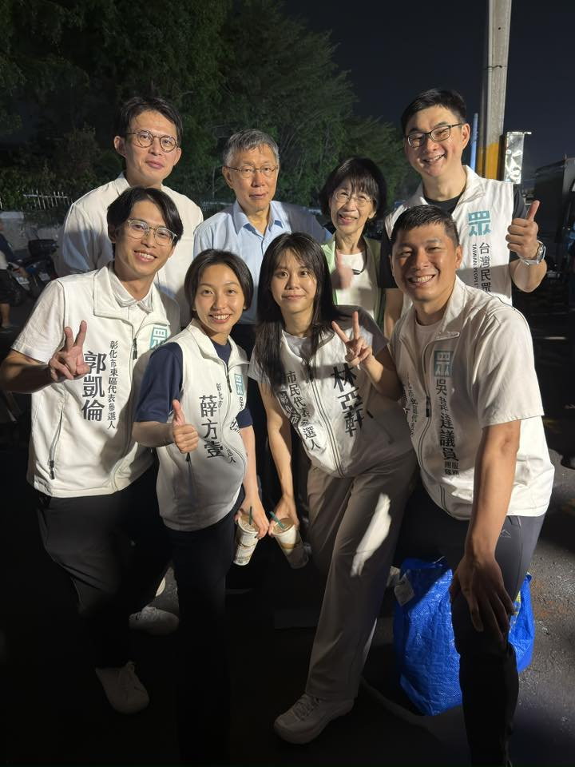
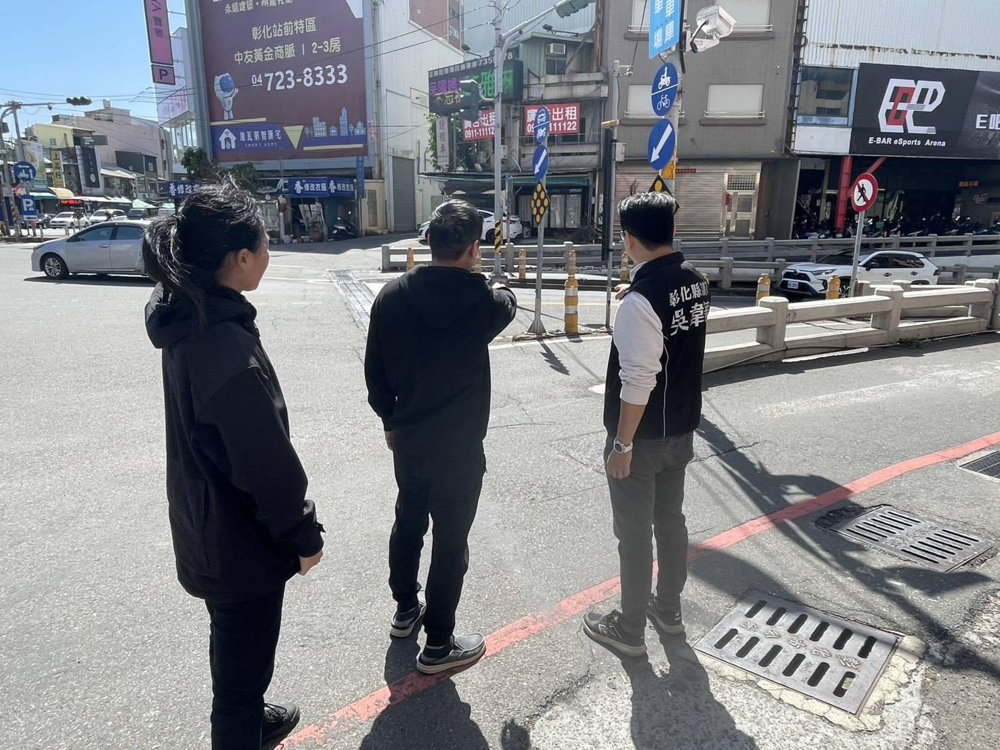
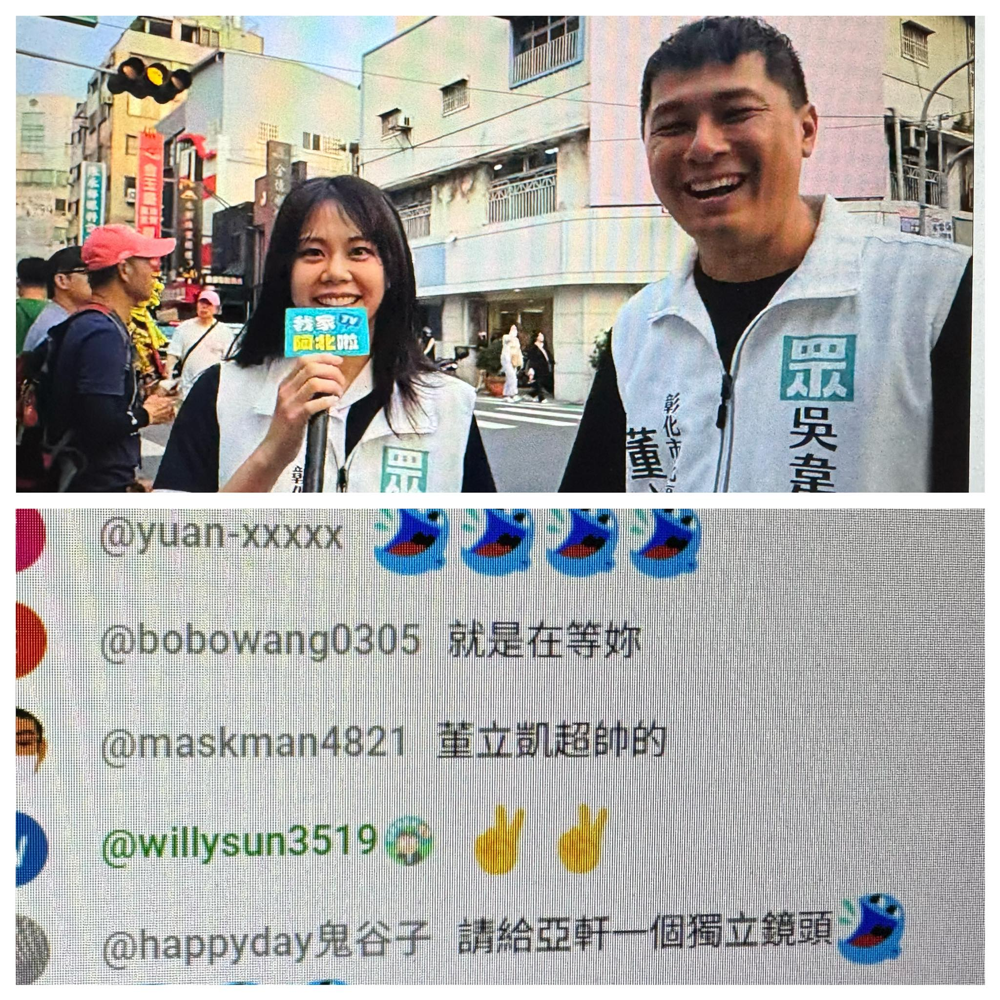
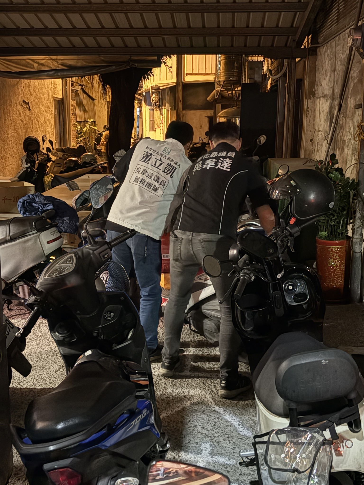
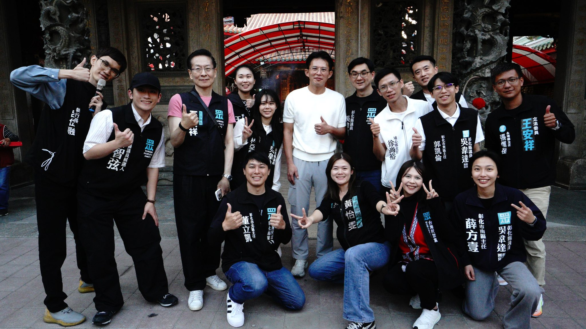

01
交通安全與人行道優化
SAFETY ／ TRAFFIC針對北區學區（如大成國小、彰師大周邊）與老舊巷弄，爭取落實「人本交通」，增設標線型人行道及路口照明。讓孩子上下學、長輩上市場，都能在安全的環境中安心步行。
此外，將持續關注民生地下道等通行熱點的用路安全議題，從第一線實地會勘做起。
From the heart, an action-driven voice for North Changhua.
從「心」出發，做北區的行動派。
立凱是一個個性隨和、天生樂觀的人。在 MBTI 性格測驗中，是典型的 ENFP「競選者」人格，也就是大家口中充滿能量的「快樂小狗」。一顆熱情、積極且富有同理心的心，樂於社交、善於調解氣氛——這份對細節的堅持與對鄉親情緒的感知，讓立凱能第一線察覺里民的需求，用最積極的行動力解決問題。
成長於一個平凡而溫馨的普通家庭，雙親健在，家中三兄弟排行第二，上有哥哥、下有弟弟。與兄弟及父母之間感情深厚，這種和睦的家庭氛圍，培養了立凱包容、耐心的好脾氣，也讓他深知一個安居樂業的環境對每個家庭有多麼重要。
畢業於國立屏東科技大學水土保持學系，並完成研究所階段學業。曾任恒達企業有限公司開發暨行銷經理三年（2022–2025），具備跨領域實務歷練。現任台灣民眾黨彰化縣黨部彰化市北區主任，從基層黨務做起，走遍北區每個巷弄，傾聽長輩的需要，接住青年的不安。
在經濟狀況上，立凱自給自足、生活踏實。生活中嚴守自律，不菸、不酒、不賭，沒有任何不良嗜好。平時最大的休閒僅是偶爾與好友打點小麻將聯絡感情，這是放鬆身心的方式，也展現了平易近人、重視情誼的一面。
北區雖然擁有深厚的文化底蘊，但隨著人口結構改變，基礎設施與生活品質正面臨瓶頸。我不願看著家鄉停滯，希望發揮「快樂小狗」的熱忱與同理心，用三個核心理念，把北區打造為一個更溫暖、更宜居的現代城市。
行得安全、住得安心。針對北區學區（大成國小、彰師大周邊）與老舊巷弄，落實「人本交通」，增設標線型人行道與路口照明。讓每位北區的孩子、長輩、行人，都能有尊嚴地走在自己的家鄉。
對毛孩友善、對長者尊榮。北區是一個有人情味的家。打造對毛小孩友善的公共空間、強化長者照護網絡、建立鄰里情感的連結點——讓這份家的溫度，被每一位居民實際感受到。
改善市容、去除雜亂、增加綠意。以智慧垃圾桶、戶外吸菸亭等具體行動，把多餘的雜亂從街道「減法」掉，把綠意、整潔、與舒適的城市感受還給北區。
不是空泛口號，而是基於北區的真實需求，提出能在四年任期內推動、可被檢驗的具體行動方案。
針對北區學區（如大成國小、彰師大周邊）與老舊巷弄，爭取落實「人本交通」，增設標線型人行道及路口照明。讓孩子上下學、長輩上市場，都能在安全的環境中安心步行。
此外，將持續關注民生地下道等通行熱點的用路安全議題，從第一線實地會勘做起。
在主要公園與人流聚集點設置美觀、具分類功能的智慧垃圾桶，減少亂丟垃圾，提升市容整潔度，也讓資源回收更有效率。
把先進城市的解方，落實到北區每一條主要街道。
參考國外經驗，在開放空間設置透明、通風的「戶外吸菸亭」，落實菸灰不落地，保障非吸菸者的健康，也給吸菸者一個有尊嚴的空間。
用「減法」取代對立——讓兩造的權益都能被照顧到。
推動毛孩友善公共空間，包括公園的寵物休憩區、便溺處理設施。同時關注高齡社會議題，串聯北區里鄰，建立長者支持網絡，讓每位長輩在家門口就能被照顧。
從去除電線雜亂、整理招牌、增加騎樓綠植——把「減法」哲學落實到每一條街。北區不需要更多的東西，需要的是把該有的好好整理好。
承襲吳韋達議員服務團隊的基層精神，從「幫民眾牽摩托車」這種小事做起，用最積極的行動力解決問題。每一件陳情都會建檔、追蹤、回覆——民代不是高高在上，是鄉親家門口的那個人。
從大甲媽祖繞境的香火相伴、到老巷口幫民眾牽摩托車，從黨主席帶隊的造勢、到第一線的交通會勘——立凱的競選之路，從來不在冷氣房裡。





立凱與彰化縣議員吳韋達長期合作，並承襲其服務團隊的基層精神。從柯文哲主席、黃國昌主席的造勢場合，到地方廟宇、夜市掃街，立凱始終跟黨中央、地方議員站在一起。
2026 年，是民眾黨在地方扎根的關鍵一役。立凱代表的不只是個人，而是整個民眾黨在彰化北區，對「正常政治、踏實服務」的承諾。
無論是交通、長照、毛孩、市容，或是任何北區鄉親的生活疑難——電話、Email、社群私訊都歡迎。每一件陳情都會建檔、追蹤、回覆。
北區升級，立凱出擊。
用「快樂小狗」的熱忱，做最踏實的行動派。